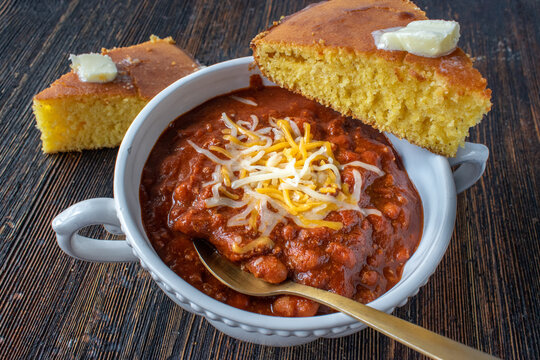

Chili

Description
This is my best chili recipe. After years of adjusting recipes that were either too spicy or too mild, everyone loves this. Even my wife and kids who hate chili.
Ingredients
- 4 tablespoons olive oil
- 1 yellow onion, chopped
- 1 red bell pepper, chopped
- 1 Anaheim chile pepper, chopped
- 2 red jalapeno pepper, chopped
- 4 garlic cloves, minced
- 2 1/2 pounds lean ground beef
- 1/4 cup Worcestershire sauce
- 1 pinch garlic powder, or to taste
- 2 beef bouillon cubes
- 1 (12 fluid ounce) can or bottle light beer
- 1 (28 ounce) can crushed San Marzano tomatoes
- 1 (14.5 ounce) can fire-roasted diced tomatoes
- 1 (12 ounce) can tomato paste
- 1/2 cup white wine
- 2 tablespoons chili powder
- 2 tablespoons ground cumin
- 1 tablespoon brown sugar
- 1 tablespoon chipotle pepper sauce
- 2 1/2 teaspoons dried basil
- 1 1/2 teaspoons smoked paprika
- 1 teaspoon salt
- 1/2 teaspoon dried oregano
- 1/2 teaspoon ground black pepper
- 2 (16 ounce) cans dark red kidney beans
- 1 cup sour cream
- 3 tablespoons chopped fresh cilantro
- 1/2 teaspoon ground cumi
Steps
- Gather all ingredients.
- Heat oil in a large pot over medium heat; cook and stir onion, bell pepper, Anaheim pepper, jalapeno peppers, and garlic in the hot oil until softened.
- Meanwhile, heat a large skillet over medium-high heat. Cook and stir beef in the hot skillet until browned and crumbly, 5 to 7 minutes.
- Add Worcestershire sauce and garlic powder. Crumble bouillon cubes over beef and add beer. Continue to cook , scraping any browned bits from the bottom of the skillet, until liquid is hot, about 3 minutes.
- Stir beef mixture into pepper mixture.
- Stir crushed tomatoes, diced tomatoes, tomato paste, and wine to the beef mixture. Season with chili powder, 2 tablespoons cumin, brown sugar, pepper sauce, basil, paprika, salt, oregano, and black pepper.
- Bring to a boil and reduce heat to medium-low. Cover and simmer until meat and vegetables are very tender and flavors have developed in the chili, about 90 minutes, stirring occasionally.
- Mix kidney beans into beef and vegetables. Continue to simmer until beans are hot, about 30 minutes more.
- Blend sour cream, cilantro, and remaining 1/2 teaspoon cumin in a food processor until smooth. Serve sour cream mixture with chili.
Back to the recipes